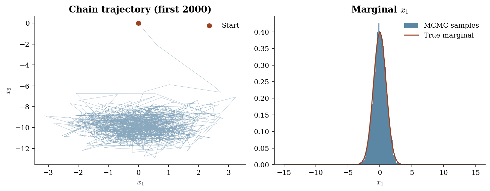
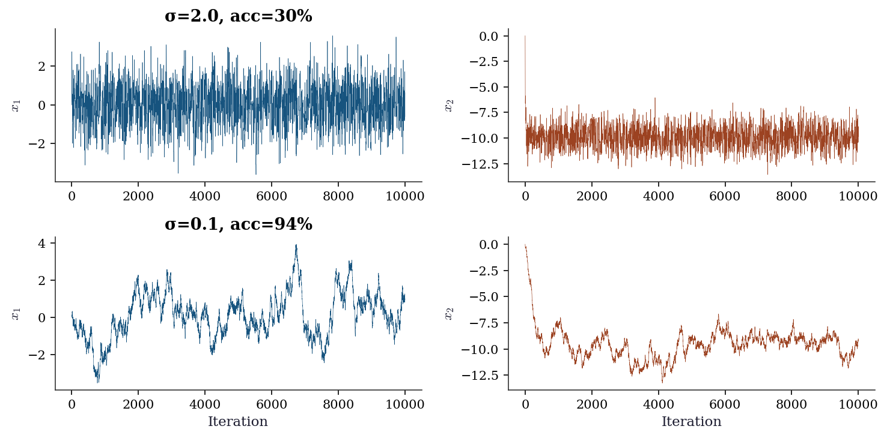
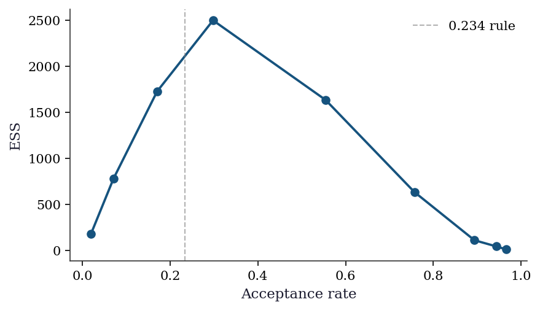
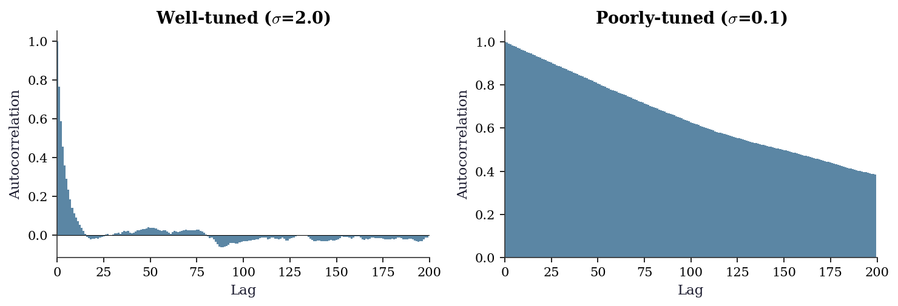
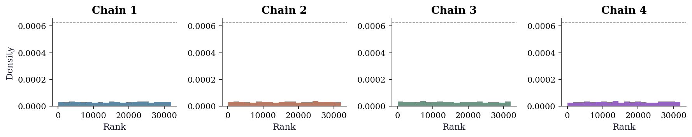
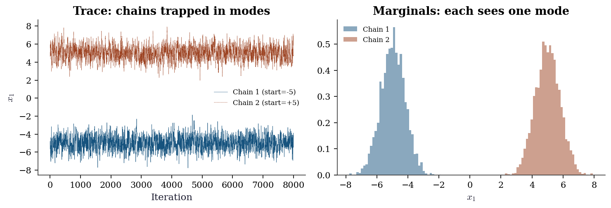
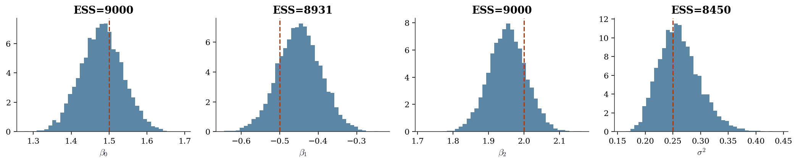
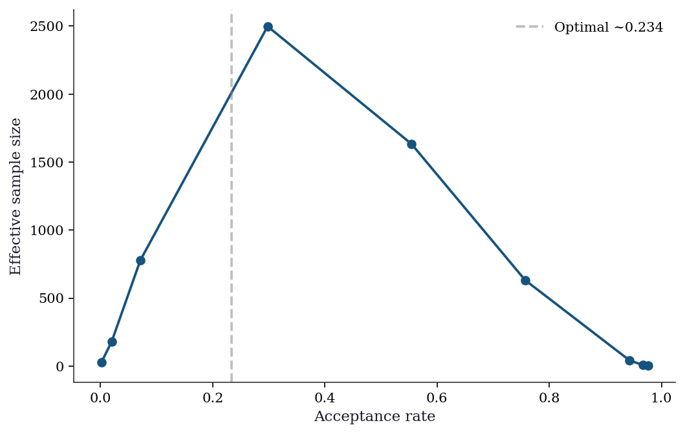

import numpy as np
import matplotlib.pyplot as plt
from scipy import stats
plt.style.use('assets/book.mplstyle')
rng = np.random.default_rng(42)8 MCMC: Theory and Diagnostics
8.0.1 Notation for this chapter
| Symbol | Meaning |
|---|---|
| \(\pi(\mathbf{x})\) | Target distribution (unnormalized OK) |
| \(q(\mathbf{x}' \mid \mathbf{x})\) | Proposal distribution |
| \(\alpha(\mathbf{x}, \mathbf{x}')\) | Acceptance probability |
| \(\hat{R}\) | Gelman–Rubin convergence diagnostic |
| \(\tau_{\text{int}}\) | Integrated autocorrelation time |
| \(n_{\text{eff}}\) | Effective sample size |
8.1 Motivation
Chapter 7 computed expectations by drawing independent samples. That works when you can sample from the distribution directly. But in Bayesian inference, the target is a posterior \(\pi(\boldsymbol{\theta} \mid \mathbf{y}) \propto p(\mathbf{y} \mid \boldsymbol{\theta})\, p(\boldsymbol{\theta})\) — and you can evaluate it pointwise (up to a constant) but you cannot sample from it directly.
Markov chain Monte Carlo (MCMC) solves this by constructing a Markov chain whose stationary distribution is \(\pi\). After the chain has “burned in,” its samples are approximately distributed as \(\pi\), and sample averages converge to expectations under \(\pi\). The cost: the samples are correlated, so convergence is slower than the \(1/\sqrt{n}\) rate of independent Monte Carlo.
This chapter builds three MCMC samplers from scratch — Metropolis–Hastings, Gibbs, and a toy Hamiltonian Monte Carlo — and focuses heavily on diagnostics: how to tell whether the chain has converged, how to estimate the effective sample size, and what to do when it hasn’t. Production MCMC (PyMC, NumPyro, Stan) is mentioned but not used; the from-scratch implementations ground the intuition that makes production tools interpretable.
8.2 Mathematical Foundation
8.2.1 The key idea: detailed balance
A Markov chain with transition kernel \(T(\mathbf{x}' \mid \mathbf{x})\) has \(\pi\) as its stationary distribution if
\[ \pi(\mathbf{x})\, T(\mathbf{x}' \mid \mathbf{x}) = \pi(\mathbf{x}')\, T(\mathbf{x} \mid \mathbf{x}') \quad \forall \mathbf{x}, \mathbf{x}'. \tag{8.1}\]
This is detailed balance: the probability of being at \(\mathbf{x}\) and transitioning to \(\mathbf{x}'\) equals the probability of being at \(\mathbf{x}'\) and transitioning to \(\mathbf{x}\). Summing both sides over \(\mathbf{x}\) gives \(\pi(\mathbf{x}') = \int \pi(\mathbf{x}) T(\mathbf{x}' \mid \mathbf{x})\, d\mathbf{x}\) — the definition of stationarity.
Detailed balance is a sufficient condition for stationarity, not necessary. But it is the condition that Metropolis–Hastings is designed to satisfy.
8.2.2 The Metropolis–Hastings acceptance ratio
Given a proposal \(q(\mathbf{x}' \mid \mathbf{x})\), the MH algorithm accepts \(\mathbf{x}'\) with probability
\[ \alpha(\mathbf{x}, \mathbf{x}') = \min\!\left(1,\, \frac{\pi(\mathbf{x}')\, q(\mathbf{x} \mid \mathbf{x}')}{\pi(\mathbf{x})\, q(\mathbf{x}' \mid \mathbf{x})}\right). \tag{8.2}\]
Why this works: The resulting transition kernel \(T(\mathbf{x}' \mid \mathbf{x}) = q(\mathbf{x}' \mid \mathbf{x})\, \alpha(\mathbf{x}, \mathbf{x}')\) satisfies detailed balance by construction. Check: \(\pi(\mathbf{x}) q(\mathbf{x}' \mid \mathbf{x}) \alpha(\mathbf{x}, \mathbf{x}') = \min(\pi(\mathbf{x}) q(\mathbf{x}' \mid \mathbf{x}),\, \pi(\mathbf{x}') q(\mathbf{x} \mid \mathbf{x}'))\), which is symmetric in \((\mathbf{x}, \mathbf{x}')\). Done.
The beauty of Equation 8.2: it only requires the ratio \(\pi(\mathbf{x}')/\pi(\mathbf{x})\), so the normalizing constant of \(\pi\) cancels. This is why MCMC works for Bayesian posteriors where the marginal likelihood \(p(\mathbf{y})\) is intractable.
8.2.3 Gibbs sampling as a special case
Gibbs sampling updates one coordinate at a time from its full conditional: \(x_j^{(t+1)} \sim \pi(x_j \mid x_1^{(t+1)}, \ldots, x_{j-1}^{(t+1)}, x_{j+1}^{(t)}, \ldots, x_p^{(t)})\).
This is MH with acceptance probability 1: the proposal is the full conditional, and the MH ratio simplifies to 1. The advantage: no tuning. The limitation: you need the full conditionals in closed form, which restricts the models you can use.
8.2.4 Why chains get stuck
Two failure modes dominate:
The proposal is too narrow. The chain takes tiny steps and explores slowly. Acceptance rate is high (~95%) but the chain is nearly stationary. Autocorrelation is extreme.
The proposal is too wide. Most proposals land in low-probability regions and are rejected. The chain stays put for long stretches. Acceptance rate is low (~5%).
The optimal acceptance rate for a Gaussian random-walk proposal on a \(d\)-dimensional target is approximately 0.234 (Roberts, Gelman, and Gilks, 1997). This is the basis for adaptive MCMC: tune the proposal variance during burn-in to achieve ~23% acceptance.
8.2.5 Hamiltonian Monte Carlo (intuition)
HMC treats the target \(\pi(\mathbf{x})\) as a potential energy \(U(\mathbf{x}) = -\log \pi(\mathbf{x})\) and introduces auxiliary momentum variables \(\mathbf{p}\). The joint distribution \(\pi(\mathbf{x}, \mathbf{p}) \propto \exp(-U(\mathbf{x}) - \frac{1}{2}\mathbf{p}^\top\mathbf{M}^{-1}\mathbf{p})\) is simulated by Hamiltonian dynamics (leapfrog integration), which proposes distant points that are likely to be accepted because the Hamiltonian is approximately conserved.
HMC suppresses random-walk behavior: instead of diffusing, it travels through the target. The cost is that it requires the gradient \(\nabla \log \pi\), which vanilla MH does not.
The leapfrog integrator. Hamiltonian dynamics are governed by \(\dot{\mathbf{x}} = \mathbf{M}^{-1}\mathbf{p}\) and \(\dot{\mathbf{p}} = -\nabla U(\mathbf{x}) = \nabla \log \pi(\mathbf{x})\). The leapfrog (Störmer–Verlet) integrator discretizes these with step size \(\epsilon\):
\[ \begin{aligned} \mathbf{p}_{t+\epsilon/2} &= \mathbf{p}_t + \tfrac{\epsilon}{2}\, \nabla \log \pi(\mathbf{x}_t) \\ \mathbf{x}_{t+\epsilon} &= \mathbf{x}_t + \epsilon\, \mathbf{M}^{-1}\mathbf{p}_{t+\epsilon/2} \\ \mathbf{p}_{t+\epsilon} &= \mathbf{p}_{t+\epsilon/2} + \tfrac{\epsilon}{2}\, \nabla \log \pi(\mathbf{x}_{t+\epsilon}) \end{aligned} \tag{8.3}\]
Three properties make leapfrog the right choice for MCMC. First, it is symplectic: it preserves the phase-space volume element \(d\mathbf{x}\, d\mathbf{p}\), so the MH correction needs no Jacobian term. Second, it is time-reversible: negating \(\mathbf{p}\) and running the integrator backward recovers the starting point, which guarantees detailed balance. Third, the energy error is \(O(\epsilon^2)\) per step and bounded over long trajectories — it does not accumulate — so the MH acceptance rate stays high even for \(L\) leapfrog steps. After \(L\) steps, the proposed point \((\mathbf{x}', \mathbf{p}')\) is accepted or rejected with the standard MH probability using the Hamiltonian \(H = U(\mathbf{x}) + \frac{1}{2}\mathbf{p}^\top \mathbf{M}^{-1}\mathbf{p}\) as the log-density.
The NUTS algorithm (Hoffman and Gelman, 2014) automates the trajectory length, eliminating HMC’s most sensitive tuning parameter. NUTS is the default sampler in PyMC and Stan.
8.3 The Algorithm
Slice sampling is attractive because it requires no tuning of a proposal distribution. The width \(w\) affects efficiency but not correctness — even a poor \(w\) produces valid samples, just slowly. The algorithm automatically adapts to the local scale of the target: in wide regions, the slice is wide and steps are large; in narrow regions, the shrinking procedure contracts the interval. This makes slice sampling a useful default when you have no good intuition for the proposal variance, which is exactly when random-walk MH struggles most.
8.4 Statistical Properties
The MCMC CLT. Under regularity conditions (geometric ergodicity), the MCMC estimator \(\hat{\mu}_N = \frac{1}{N}\sum_{t=1}^N h(\mathbf{x}_t)\) satisfies \[ \sqrt{N}(\hat{\mu}_N - \mu) \xrightarrow{d} \mathcal{N}(0, \sigma^2_{\text{MCMC}}), \] where \(\sigma^2_{\text{MCMC}} = \text{Var}(h(X)) \cdot (1 + 2\sum_{k=1}^\infty \rho_k)\) and \(\rho_k\) is the lag-\(k\) autocorrelation of the chain. The factor \(\tau_{\text{int}} = 1 + 2\sum \rho_k\) is the integrated autocorrelation time: each MCMC sample is worth \(1/\tau_{\text{int}}\) independent samples.
This is the Kipnis–Varadhan CLT for stationary, ergodic Markov chains (Kipnis and Varadhan, 1986). The key condition is that the chain is reversible (satisfies detailed balance) and that \(h \in L^2(\pi)\) — i.e., the function you are averaging has finite variance under the target. Unlike the classical CLT, no independence is needed; the autocorrelation structure is absorbed into \(\sigma^2_{\text{MCMC}}\). The practical consequence: MCMC estimators have the same \(1/\sqrt{N}\) convergence rate as independent Monte Carlo, but the constant is worse by a factor of \(\sqrt{\tau_{\text{int}}}\).
Effective sample size: \(n_{\text{eff}} = N / \tau_{\text{int}}\). If your chain has \(N = 10{,}000\) samples but \(\tau_{\text{int}} = 100\), your effective sample size is 100 — and your standard error is \(\sigma / \sqrt{100}\), not \(\sigma / \sqrt{10{,}000}\).
Geometric ergodicity is the regularity condition that makes the CLT practically reliable. A chain is geometrically ergodic if it forgets its starting point at an exponential rate: \(\|T^n(x, \cdot) - \pi(\cdot)\|_{\text{TV}} \leq M(x)\, r^n\) for some \(r < 1\). For the random-walk MH algorithm on a log-concave target (a common case in Bayesian inference), geometric ergodicity holds whenever the proposal has lighter tails than the target (Roberts and Tweedie, 1996). This is one reason Gaussian proposals work well for targets with at least exponentially decaying tails, and fail for heavy-tailed targets like the Cauchy.
8.5 From-Scratch Implementation
8.5.1 Metropolis–Hastings
def metropolis_hastings(log_target, x0, proposal_std, n_samples,
seed=42):
"""Random-walk Metropolis-Hastings.
Implements Algorithm 8.1 with Gaussian proposal.
Parameters
----------
log_target : callable
Log of target density (unnormalized OK).
x0 : array
Starting point.
proposal_std : float
Standard deviation of Gaussian proposal.
n_samples : int
Number of samples to draw.
Returns
-------
dict with keys: samples, acceptance_rate, log_probs
"""
local_rng = np.random.default_rng(seed)
d = len(x0)
samples = np.zeros((n_samples, d))
log_probs = np.zeros(n_samples)
samples[0] = x0
log_probs[0] = log_target(x0)
n_accept = 0
for t in range(1, n_samples):
# Propose (symmetric Gaussian: q cancels in MH ratio)
x_prop = samples[t-1] + proposal_std * local_rng.standard_normal(d)
lp_prop = log_target(x_prop)
# MH acceptance (log scale for numerical stability)
log_alpha = lp_prop - log_probs[t-1]
if np.log(local_rng.random()) < log_alpha:
samples[t] = x_prop
log_probs[t] = lp_prop
n_accept += 1
else:
samples[t] = samples[t-1]
log_probs[t] = log_probs[t-1]
return {
'samples': samples,
'acceptance_rate': n_accept / (n_samples - 1),
'log_probs': log_probs,
}8.5.2 Gibbs sampler
def gibbs_bivariate_normal(mu, Sigma, n_samples, seed=42):
"""Gibbs sampler for a bivariate normal.
Implements Algorithm 8.2 for the specific case where the
full conditionals are univariate normals.
"""
local_rng = np.random.default_rng(seed)
rho = Sigma[0,1] / np.sqrt(Sigma[0,0] * Sigma[1,1])
s1, s2 = np.sqrt(Sigma[0,0]), np.sqrt(Sigma[1,1])
samples = np.zeros((n_samples, 2))
samples[0] = mu
for t in range(1, n_samples):
# Full conditional: x1 | x2
m1 = mu[0] + rho * s1/s2 * (samples[t-1,1] - mu[1])
v1 = s1**2 * (1 - rho**2)
samples[t, 0] = m1 + np.sqrt(v1) * local_rng.standard_normal()
# Full conditional: x2 | x1
m2 = mu[1] + rho * s2/s1 * (samples[t,0] - mu[0])
v2 = s2**2 * (1 - rho**2)
samples[t, 1] = m2 + np.sqrt(v2) * local_rng.standard_normal()
return samples8.5.3 Slice sampler
def slice_sampler(log_target, x0, w, n_samples, seed=42):
"""Univariate slice sampler (Algorithm 8.3).
Uses stepping-out to find the slice interval
and shrinking to sample from it.
Parameters
----------
log_target : callable
Log of target density (unnormalized OK).
x0 : float
Starting point.
w : float
Step-out width (controls initial interval size).
n_samples : int
Number of samples to draw.
Returns
-------
samples : array of shape (n_samples,)
"""
local_rng = np.random.default_rng(seed)
samples = np.zeros(n_samples)
samples[0] = x0
for t in range(1, n_samples):
x = samples[t - 1]
lp_x = log_target(x)
# Draw the vertical level (log scale)
log_u = lp_x + np.log(local_rng.random())
# Step out to find interval [L, R]
L = x - w * local_rng.random()
R = L + w
while log_target(L) > log_u:
L -= w
while log_target(R) > log_u:
R += w
# Shrink and sample
while True:
x_prop = L + local_rng.random() * (R - L)
if log_target(x_prop) > log_u:
samples[t] = x_prop
break
# Shrink toward current point
if x_prop < x:
L = x_prop
else:
R = x_prop
return samples# Test: sample from a mixture of two Gaussians
def log_mixture(x):
"""Log-density of 0.3 * N(-3, 1) + 0.7 * N(2, 0.5^2)."""
return np.logaddexp(
np.log(0.3) + stats.norm.logpdf(x, loc=-3, scale=1),
np.log(0.7) + stats.norm.logpdf(x, loc=2, scale=0.5),
)
slice_samples = slice_sampler(
log_mixture, x0=0.0, w=1.0, n_samples=20_000,
)
print(f"Slice sampler: mean={slice_samples[2000:].mean():.3f}, "
f"std={slice_samples[2000:].std():.3f}")Slice sampler: mean=0.130, std=2.529The slice sampler handles this bimodal target without any proposal tuning — the step-out width \(w = 1\) works because the shrinking procedure adapts. A random-walk MH with the wrong proposal variance would either get stuck in one mode or reject most proposals.
8.5.4 Hamiltonian Monte Carlo
def hmc(log_target, grad_log_target, x0, epsilon, L,
n_samples, seed=42):
"""Hamiltonian Monte Carlo with leapfrog integrator.
Implements the leapfrog discretization of Hamilton's
equations (@eq-leapfrog) with an MH correction.
Parameters
----------
log_target : callable
Log of target density (unnormalized OK).
grad_log_target : callable
Gradient of log target.
x0 : array
Starting point.
epsilon : float
Leapfrog step size.
L : int
Number of leapfrog steps per proposal.
n_samples : int
Number of samples to draw.
Returns
-------
dict with keys: samples, acceptance_rate, n_grad
"""
local_rng = np.random.default_rng(seed)
d = len(x0)
samples = np.zeros((n_samples, d))
samples[0] = x0
n_accept = 0
n_grad = 0
for t in range(1, n_samples):
x = samples[t - 1].copy()
p = local_rng.standard_normal(d)
# Current Hamiltonian
H_current = -log_target(x) + 0.5 * p @ p
# Leapfrog integration
x_new = x.copy()
p_new = p.copy()
p_new += 0.5 * epsilon * grad_log_target(x_new)
n_grad += 1
for _ in range(L - 1):
x_new += epsilon * p_new
p_new += epsilon * grad_log_target(x_new)
n_grad += 1
x_new += epsilon * p_new
p_new += 0.5 * epsilon * grad_log_target(x_new)
n_grad += 1
# MH correction (exact for perfect integration)
H_proposed = -log_target(x_new) + 0.5 * p_new @ p_new
if np.log(local_rng.random()) < H_current - H_proposed:
samples[t] = x_new
n_accept += 1
else:
samples[t] = x
return {
'samples': samples,
'acceptance_rate': n_accept / (n_samples - 1),
'n_grad': n_grad,
}# Compare HMC to MH on a correlated 2D Gaussian
cov = np.array([[1.0, 0.9], [0.9, 1.0]])
cov_inv = np.linalg.inv(cov)
log_corr = lambda x: -0.5 * x @ cov_inv @ x
grad_log_corr = lambda x: -cov_inv @ x
res_hmc = hmc(log_corr, grad_log_corr, np.zeros(2),
epsilon=0.15, L=20, n_samples=5000)
res_mh_corr = metropolis_hastings(
log_corr, np.zeros(2), 0.5, 5000,
)
print(f"{'Method':<6} {'Acc':>6} {'Std(x1)':>8}")
print(f"{'MH':<6} {res_mh_corr['acceptance_rate']:>6.3f} "
f"{res_mh_corr['samples'][500:, 0].std():>8.3f}")
print(f"{'HMC':<6} {res_hmc['acceptance_rate']:>6.3f} "
f"{res_hmc['samples'][500:, 0].std():>8.3f}")
print(f"\nTrue std(x1) = {np.sqrt(cov[0,0]):.3f}")
print(f"HMC gradient evaluations: {res_hmc['n_grad']}")Method Acc Std(x1)
MH 0.559 0.997
HMC 0.996 1.008
True std(x1) = 1.000
HMC gradient evaluations: 104979The correlated target exposes MH’s weakness: when \(\rho = 0.9\), the random walk must navigate a narrow ellipse by diffusion. HMC follows the gradient along the ellipse, producing near-independent samples. This advantage grows with dimension — in \(d = 100\) with moderate correlations, MH is essentially useless while HMC remains practical.
8.5.5 Demonstration: sampling a banana-shaped distribution
def log_banana(x, b=0.1):
"""Log-density of a banana-shaped distribution."""
return -0.5 * (x[0]**2 + (x[1] - b*x[0]**2 + 100*b)**2)
result = metropolis_hastings(log_banana, x0=np.array([0.0, 0.0]),
proposal_std=2.0, n_samples=50_000)
samples = result['samples']
print(f"Acceptance rate: {result['acceptance_rate']:.3f}")
fig, (ax1, ax2) = plt.subplots(1, 2, figsize=(10, 4))
# Trajectory (first 2000 samples)
ax1.plot(samples[:2000, 0], samples[:2000, 1], linewidth=0.3,
alpha=0.5, color="C0")
ax1.scatter(samples[0, 0], samples[0, 1], color="C1", s=40,
zorder=5, label="Start")
ax1.set_xlabel(r"$x_1$"); ax1.set_ylabel(r"$x_2$")
ax1.set_title("Chain trajectory (first 2000)")
ax1.legend()
# Marginal histogram
ax2.hist(samples[5000:, 0], bins=60, density=True, alpha=0.7,
color="C0", label="MCMC samples")
x_grid = np.linspace(-15, 15, 200)
# Approximate marginal by numerical integration
marginal = np.array([np.exp(-0.5*x**2) for x in x_grid])
marginal /= np.trapz(marginal, x_grid)
ax2.plot(x_grid, marginal, color="C1", linewidth=1.5,
label="True marginal")
ax2.set_xlabel(r"$x_1$"); ax2.set_title(r"Marginal $x_1$")
ax2.legend()
plt.tight_layout()
plt.show()Acceptance rate: 0.292
8.6 Diagnostics
This is the most important section of the chapter. Getting MCMC right means getting diagnostics right.
8.6.1 Trace plots
# Well-tuned
res_good = metropolis_hastings(log_banana, np.zeros(2), 2.0, 10_000)
# Poorly-tuned (too narrow)
res_bad = metropolis_hastings(log_banana, np.zeros(2), 0.1, 10_000)
fig, axes = plt.subplots(2, 2, figsize=(10, 5))
for i, (res, label) in enumerate(
[(res_good, f"σ=2.0, acc={res_good['acceptance_rate']:.0%}"),
(res_bad, f"σ=0.1, acc={res_bad['acceptance_rate']:.0%}")]
):
axes[i, 0].plot(res['samples'][:, 0], linewidth=0.3, color="C0")
axes[i, 0].set_ylabel(r"$x_1$")
axes[i, 0].set_title(label)
axes[i, 1].plot(res['samples'][:, 1], linewidth=0.3, color="C1")
axes[i, 1].set_ylabel(r"$x_2$")
axes[1, 0].set_xlabel("Iteration")
axes[1, 1].set_xlabel("Iteration")
plt.tight_layout()
plt.show()
8.6.2 Proposal tuning: the 0.234 rule
The optimal acceptance rate for a Gaussian random-walk proposal on a \(d\)-dimensional target is approximately 0.234 (Roberts, Gelman, and Gilks, 1997). The theory assumes the target is a product of identical univariate distributions as \(d \to \infty\), but the rule works surprisingly well in practice for moderate \(d\) and non-product targets. The optimal proposal standard deviation scales as \(\sigma_{\text{opt}} \approx 2.38 / \sqrt{d}\) times the marginal standard deviation of the target.
sigmas_scan = [0.05, 0.1, 0.2, 0.5, 1.0, 2.0, 3.0, 5.0, 10.0]
acc_rates, ess_vals = [], []
for s in sigmas_scan:
r = metropolis_hastings(
log_banana, np.zeros(2), s, 20_000,
)
acc_rates.append(r['acceptance_rate'])
e, _ = effective_sample_size(r['samples'][2000:, 0])
ess_vals.append(e)
fig, ax = plt.subplots(figsize=(6, 3.5))
ax.plot(acc_rates, ess_vals, 'o-', color="C0")
ax.axvline(0.234, color="gray", linestyle="--",
linewidth=1, alpha=0.6, label="0.234 rule")
ax.set_xlabel("Acceptance rate")
ax.set_ylabel("ESS")
ax.legend()
plt.tight_layout()
plt.show()
In practice, tune during burn-in: if acceptance is above 40%, increase \(\sigma\); if below 15%, decrease it. Adaptive MCMC algorithms (Haario, Saksman, and Tamminen, 2001) automate this by estimating the target covariance from the chain’s history and adjusting the proposal. PyMC’s NUTS does something similar for the step size \(\epsilon\).
8.6.3 Autocorrelation and effective sample size
def effective_sample_size(chain):
"""Estimate ESS from a 1D chain via autocorrelation."""
n = len(chain)
chain_centered = chain - chain.mean()
# FFT-based autocorrelation
fft = np.fft.fft(chain_centered, n=2*n)
acf = np.fft.ifft(fft * np.conj(fft))[:n].real
acf /= acf[0]
# Truncate at first negative autocorrelation (Geyer's rule)
neg_idx = np.where(acf < 0)[0]
if len(neg_idx) > 0:
acf = acf[:neg_idx[0]]
tau_int = 1 + 2 * np.sum(acf[1:])
return n / tau_int, tau_int
for res, label in [(res_good, "Well-tuned"), (res_bad, "Poorly-tuned")]:
ess, tau = effective_sample_size(res['samples'][1000:, 0])
print(f"{label}: ESS={ess:.0f}, τ_int={tau:.1f}, "
f"ESS/N={ess/9000:.3f}")Well-tuned: ESS=1150, τ_int=7.8, ESS/N=0.128
Poorly-tuned: ESS=23, τ_int=384.5, ESS/N=0.0038.6.4 Autocorrelation plots
The ESS number tells you how much autocorrelation there is. The autocorrelation plot tells you where it comes from — whether the chain has a few highly correlated lags (fixable by thinning) or long- range dependence (a sign the sampler is struggling).
def autocorrelation(chain, max_lag=200):
"""Compute normalized autocorrelation via FFT."""
n = len(chain)
chain_centered = chain - chain.mean()
fft = np.fft.fft(chain_centered, n=2 * n)
acf = np.fft.ifft(fft * np.conj(fft))[:n].real
acf /= acf[0]
return acf[:min(max_lag, n)]
fig, (ax1, ax2) = plt.subplots(1, 2, figsize=(10, 3.5))
for ax, res, label in [
(ax1, res_good, r"Well-tuned ($\sigma$=2.0)"),
(ax2, res_bad, r"Poorly-tuned ($\sigma$=0.1)"),
]:
acf = autocorrelation(res['samples'][1000:, 0])
ax.bar(range(len(acf)), acf, width=1, color="C0",
alpha=0.7, edgecolor="none")
ax.axhline(0, color="black", linewidth=0.5)
ax.set_xlabel("Lag")
ax.set_ylabel("Autocorrelation")
ax.set_title(label)
ax.set_xlim(0, 200)
plt.tight_layout()
plt.show()
8.6.5 The \(\hat{R}\) diagnostic
The Gelman–Rubin \(\hat{R}\) compares within-chain variance to between-chain variance across multiple chains started from different points. If \(\hat{R} \approx 1\), the chains have converged to the same distribution. If \(\hat{R} > 1.01\), they have not.
def gelman_rubin(chains):
"""Compute Gelman-Rubin R-hat from multiple chains.
Parameters
----------
chains : list of arrays
Each array is (n_samples,) from one chain.
Returns
-------
R_hat : float
"""
m = len(chains)
n = min(len(c) for c in chains)
chains = [c[:n] for c in chains]
chain_means = [c.mean() for c in chains]
overall_mean = np.mean(chain_means)
# Between-chain variance
B = n * np.var(chain_means, ddof=1)
# Within-chain variance
W = np.mean([np.var(c, ddof=1) for c in chains])
# Pooled estimate
var_hat = (1 - 1/n) * W + B / n
return np.sqrt(var_hat / W)
# Run 4 chains from different starting points
chains = []
for x0 in [np.array([-10, 10]), np.array([10, -10]),
np.array([0, 20]), np.array([5, 5])]:
res = metropolis_hastings(log_banana, x0, 2.0, 10_000,
seed=rng.integers(10000))
chains.append(res['samples'][2000:, 0]) # discard burn-in
rhat = gelman_rubin(chains)
print(f"R-hat = {rhat:.4f} (target: < 1.01)")R-hat = 1.0004 (target: < 1.01)8.6.6 Rank plots
Trace plots are useful but subjective — two analysts can disagree about whether a trace looks “hairy enough.” Rank plots (Vehtari et al., 2021) replace subjective visual inspection with a uniform-distribution check. The idea: pool all chains, replace each sample with its rank, then plot a histogram of ranks per chain. If the chains have converged to the same distribution, the ranks within each chain should be approximately uniform.
fig, axes = plt.subplots(1, 4, figsize=(12, 2.5))
# Pool and rank
all_values = np.concatenate(chains)
n_total = len(all_values)
# Assign ranks to each chain's samples
chain_len = len(chains[0])
pooled_ranks = np.argsort(np.argsort(all_values))
for i, ax in enumerate(axes):
rank_i = pooled_ranks[i * chain_len:(i + 1) * chain_len]
ax.hist(rank_i, bins=20, density=True, alpha=0.7,
color=f"C{i}", edgecolor="none")
ax.axhline(1.0 / n_total * 20, color="black",
linestyle="--", linewidth=0.8, alpha=0.5)
ax.set_title(f"Chain {i+1}")
ax.set_xlabel("Rank")
if i == 0:
ax.set_ylabel("Density")
plt.tight_layout()
plt.show()
The dashed line shows the expected density under uniformity. Deviations from the line — particularly one chain consistently concentrated at high or low ranks — indicate convergence failure that trace plots might miss, especially when chains have different variances but similar means.
8.6.7 The diagnostic checklist
After running MCMC, check in this order:
- Trace plots. Do the chains look “hairy” (good) or “stuck” (bad)?
- \(\hat{R}\). Run multiple chains. \(\hat{R} > 1.01\) = not converged.
- ESS. Effective sample size < 100 per parameter = don’t trust the estimates.
- Acceptance rate. ~23% for random-walk MH, ~65% for HMC.
8.6.8 When MCMC fails
The diagnostic checklist catches most problems, but some failure modes deserve explicit treatment because they are common, subtle, and often misdiagnosed.
Multimodality. If the target has well-separated modes, a single chain will typically get trapped in one mode and never visit the others. \(\hat{R}\) across multiple chains may look fine if all chains happen to start in the same mode; it catches the problem only when chains start in different modes and fail to merge. The tell: run chains from dispersed starting points and check whether the posterior means agree. If they do not, you have a multimodality problem.
def log_bimodal(x):
"""Log-density of well-separated bimodal target."""
return np.logaddexp(
stats.norm.logpdf(x[0], loc=-5, scale=0.8)
+ stats.norm.logpdf(x[1], loc=0, scale=1),
stats.norm.logpdf(x[0], loc=5, scale=0.8)
+ stats.norm.logpdf(x[1], loc=0, scale=1),
)
chain_left = metropolis_hastings(
log_bimodal, np.array([-5.0, 0.0]), 1.0, 8000,
seed=42,
)
chain_right = metropolis_hastings(
log_bimodal, np.array([5.0, 0.0]), 1.0, 8000,
seed=99,
)
fig, (ax1, ax2) = plt.subplots(1, 2, figsize=(10, 3.5))
ax1.plot(chain_left['samples'][:, 0], linewidth=0.3,
color="C0", label="Chain 1 (start=-5)")
ax1.plot(chain_right['samples'][:, 0], linewidth=0.3,
color="C1", label="Chain 2 (start=+5)")
ax1.set_xlabel("Iteration")
ax1.set_ylabel(r"$x_1$")
ax1.legend(fontsize=8)
ax1.set_title("Trace: chains trapped in modes")
ax2.hist(chain_left['samples'][1000:, 0], bins=40,
density=True, alpha=0.5, color="C0",
label="Chain 1")
ax2.hist(chain_right['samples'][1000:, 0], bins=40,
density=True, alpha=0.5, color="C1",
label="Chain 2")
ax2.set_xlabel(r"$x_1$")
ax2.set_title("Marginals: each sees one mode")
ax2.legend(fontsize=8)
plt.tight_layout()
plt.show()
rhat_multi = gelman_rubin([
chain_left['samples'][1000:, 0],
chain_right['samples'][1000:, 0],
])
print(f"R-hat = {rhat_multi:.4f} — correctly detects "
f"non-convergence")
R-hat = 8.9681 — correctly detects non-convergenceRemedies for multimodality include parallel tempering (run chains at different “temperatures” and swap), replica exchange, and — in practice — reparameterizing the model to eliminate the modes.
High posterior correlation. When parameters are strongly correlated under the posterior, Gibbs sampling and random-walk MH slow down dramatically. The integrated autocorrelation time scales with the condition number of the posterior covariance: \(\tau_{\text{int}} \propto \kappa(\boldsymbol{\Sigma})\). Exercise 8.4 demonstrates this for the bivariate normal. The fix is either HMC (which uses the gradient to follow the correlation structure) or reparameterization to decorrelate the posterior (e.g., centering a hierarchical model).
HMC divergences. When the leapfrog integrator encounters a region of high curvature — a narrow funnel, a sharp ridge — the step size \(\epsilon\) is too large to track the dynamics accurately. The Hamiltonian error explodes, the proposal is rejected, and the sampler cannot explore that region. In NUTS implementations (PyMC, Stan), these are reported as divergent transitions. Even a handful of divergences invalidates the posterior: the sampler is systematically avoiding a region of parameter space, biasing all estimates.
The diagnostic: count divergent transitions. Any divergence in a production run requires action — reduce the step size (at a computational cost), reparameterize, or use a non-centered parameterization for hierarchical models.
8.7 Computational Considerations
| Method | Per-step cost | Tuning | Best for |
|---|---|---|---|
| Random-walk MH | \(O(d)\) per target eval | Proposal variance | Low-\(d\), simple targets |
| Gibbs | \(O(d)\) per full conditional | None (if conditionals known) | Conjugate models |
| HMC | \(O(L \cdot d)\) per leapfrog | Step size \(\epsilon\), trajectory \(L\) | High-\(d\), smooth targets |
| NUTS | \(O(d \cdot 2^j)\) per tree | Step size only (auto-tuned) | General purpose |
For production use: PyMC (NUTS sampler, Python), NumPyro (NUTS via JAX, fast), Stan (NUTS via C++, fastest). These handle tuning, diagnostics, and parallelism. The from-scratch implementations above are for understanding, not for use.
8.8 Worked Example
Bayesian linear regression with conjugate priors, comparing Gibbs sampling to the known analytical posterior.
# Generate data
n, p = 100, 3
X = rng.standard_normal((n, p))
beta_true = np.array([1.5, -0.5, 2.0])
sigma_true = 0.5
y = X @ beta_true + sigma_true * rng.standard_normal(n)
# Prior: beta ~ N(0, tau^2 I), sigma^2 ~ InvGamma(a, b)
tau2 = 10.0 # diffuse prior on beta
a_prior, b_prior = 2.0, 1.0 # prior on sigma^2def gibbs_bayesian_lr(X, y, n_samples, tau2=10.0, a=2.0, b=1.0,
seed=42):
"""Gibbs sampler for Bayesian linear regression.
Conjugate model: y = Xβ + ε, ε ~ N(0, σ²I)
Prior: β ~ N(0, τ²I), σ² ~ InvGamma(a, b)
"""
local_rng = np.random.default_rng(seed)
n, p = X.shape
XtX = X.T @ X
Xty = X.T @ y
# Storage
betas = np.zeros((n_samples, p))
sigma2s = np.zeros(n_samples)
# Initialize
sigma2 = 1.0
for t in range(n_samples):
# Sample beta | sigma2, y
# Posterior: N(mu_post, Sigma_post)
Sigma_post = np.linalg.inv(XtX / sigma2 + np.eye(p) / tau2)
mu_post = Sigma_post @ (Xty / sigma2)
betas[t] = local_rng.multivariate_normal(mu_post, Sigma_post)
# Sample sigma2 | beta, y
# Posterior: InvGamma(a_post, b_post)
resid = y - X @ betas[t]
a_post = a + n / 2
b_post = b + 0.5 * resid @ resid
sigma2 = 1.0 / local_rng.gamma(a_post, 1.0 / b_post)
sigma2s[t] = sigma2
return betas, sigma2s
betas, sigma2s = gibbs_bayesian_lr(X, y, n_samples=10_000)
# Discard burn-in
burn = 1000
betas_post = betas[burn:]
sigma2_post = sigma2s[burn:]
print(f"{'Param':<8} {'True':>8} {'Post Mean':>10} {'Post SD':>8}")
for j in range(p):
print(f"beta_{j:<4} {beta_true[j]:>8.3f} "
f"{betas_post[:, j].mean():>10.3f} "
f"{betas_post[:, j].std():>8.3f}")
print(f"{'sigma2':<8} {sigma_true**2:>8.3f} "
f"{sigma2_post.mean():>10.3f} "
f"{sigma2_post.std():>8.3f}")Param True Post Mean Post SD
beta_0 1.500 1.481 0.056
beta_1 -0.500 -0.448 0.057
beta_2 2.000 1.954 0.053
sigma2 0.250 0.262 0.037fig, axes = plt.subplots(1, 4, figsize=(14, 3))
labels = [r"$\beta_0$", r"$\beta_1$", r"$\beta_2$", r"$\sigma^2$"]
trues = list(beta_true) + [sigma_true**2]
data = [betas_post[:, j] for j in range(p)] + [sigma2_post]
for ax, d, lbl, true in zip(axes, data, labels, trues):
ax.hist(d, bins=40, density=True, alpha=0.7, color="C0")
ax.axvline(true, color="C1", linestyle="--", linewidth=1.5)
ax.set_xlabel(lbl)
ess, _ = effective_sample_size(d)
ax.set_title(f"ESS={ess:.0f}")
plt.tight_layout()
plt.show()
8.8.1 Diagnostics for the worked example
# Run 4 chains from different initializations
all_chains_beta0 = []
for seed in [42, 123, 456, 789]:
b, s = gibbs_bayesian_lr(X, y, 10_000, seed=seed)
all_chains_beta0.append(b[1000:, 0])
rhat = gelman_rubin(all_chains_beta0)
print(f"R-hat for beta_0: {rhat:.4f}")
for j in range(p):
ess, tau = effective_sample_size(betas_post[:, j])
print(f"beta_{j}: ESS={ess:.0f}, tau_int={tau:.1f}")R-hat for beta_0: 1.0000
beta_0: ESS=9000, tau_int=1.0
beta_1: ESS=8931, tau_int=1.0
beta_2: ESS=9000, tau_int=1.08.9 Exercises
Exercise 8.1 (\(\star\star\), diagnostic failure). Run Metropolis–Hastings on the banana distribution with proposal standard deviations \(\sigma = 0.01, 0.1, 1, 5, 50\). For each, compute the acceptance rate and ESS. Plot acceptance rate vs. ESS and identify the optimal \(\sigma\). Why does ESS peak at a moderate acceptance rate, not at 0% or 100%?
%%
sigmas = [0.01, 0.05, 0.1, 0.5, 1.0, 2.0, 5.0, 10.0, 50.0]
results_tune = []
for sigma in sigmas:
res = metropolis_hastings(log_banana, np.zeros(2), sigma, 20_000)
ess, tau = effective_sample_size(res['samples'][2000:, 0])
results_tune.append({
'sigma': sigma,
'acc': res['acceptance_rate'],
'ess': ess,
})
print(f"{'sigma':>8} {'Acc Rate':>10} {'ESS':>8}")
for r in results_tune:
print(f"{r['sigma']:>8.2f} {r['acc']:>10.3f} {r['ess']:>8.0f}")
fig, ax = plt.subplots()
ax.plot([r['acc'] for r in results_tune],
[r['ess'] for r in results_tune], 'o-', color="C0")
ax.set_xlabel("Acceptance rate")
ax.set_ylabel("Effective sample size")
ax.axvline(0.234, color="gray", linestyle="--", alpha=0.5,
label="Optimal ~0.234")
ax.legend()
plt.show() sigma Acc Rate ESS
0.01 0.976 5
0.05 0.967 8
0.10 0.943 42
0.50 0.757 632
1.00 0.554 1633
2.00 0.298 2497
5.00 0.071 778
10.00 0.020 180
50.00 0.002 27
ESS peaks near acceptance rate ~23%. At 100% acceptance (\(\sigma\) too small), the chain is nearly stationary — every sample is accepted but they’re all the same point. At 0% acceptance (\(\sigma\) too large), the chain never moves. The optimal trade-off is moderate: large enough steps to explore, small enough to get accepted often enough.
%%
Exercise 8.2 (\(\star\star\), implementation). Implement a simple Hamiltonian Monte Carlo sampler with fixed step size \(\epsilon\) and trajectory length \(L\). Test it on a 2D standard normal target. Compare the ESS per gradient evaluation to random-walk MH.
%%
def hmc(log_target, grad_log_target, x0, epsilon, L, n_samples,
seed=42):
"""Simple Hamiltonian Monte Carlo.
Parameters
----------
epsilon : float
Leapfrog step size.
L : int
Number of leapfrog steps per proposal.
"""
local_rng = np.random.default_rng(seed)
d = len(x0)
samples = np.zeros((n_samples, d))
samples[0] = x0
n_accept = 0
n_grad = 0
for t in range(1, n_samples):
x = samples[t-1].copy()
p = local_rng.standard_normal(d) # momentum
# Current Hamiltonian
H_current = -log_target(x) + 0.5 * p @ p
# Leapfrog integration
x_new = x.copy()
p_new = p.copy()
p_new += 0.5 * epsilon * grad_log_target(x_new)
for _ in range(L - 1):
x_new += epsilon * p_new
p_new += epsilon * grad_log_target(x_new)
n_grad += 1
x_new += epsilon * p_new
p_new += 0.5 * epsilon * grad_log_target(x_new)
n_grad += 2 # half-steps at start and end
# MH correction
H_proposed = -log_target(x_new) + 0.5 * p_new @ p_new
if np.log(local_rng.random()) < H_current - H_proposed:
samples[t] = x_new
n_accept += 1
else:
samples[t] = x
return {
'samples': samples,
'acceptance_rate': n_accept / (n_samples - 1),
'n_grad': n_grad,
}
# Target: 2D standard normal
log_normal = lambda x: -0.5 * x @ x
grad_log_normal = lambda x: -x
# HMC
res_hmc = hmc(log_normal, grad_log_normal, np.zeros(2),
epsilon=0.1, L=20, n_samples=5000)
ess_hmc, _ = effective_sample_size(res_hmc['samples'][500:, 0])
# MH for comparison
res_mh = metropolis_hastings(
log_normal, np.zeros(2), 2.4/np.sqrt(2), # optimal scaling
5000,
)
ess_mh, _ = effective_sample_size(res_mh['samples'][500:, 0])
print(f"{'Method':<8} {'Acc':>6} {'ESS':>6} {'Grad evals':>12} {'ESS/grad':>10}")
print(f"{'MH':<8} {res_mh['acceptance_rate']:>6.3f} {ess_mh:>6.0f} "
f"{'0':>12} {'N/A':>10}")
print(f"{'HMC':<8} {res_hmc['acceptance_rate']:>6.3f} {ess_hmc:>6.0f} "
f"{res_hmc['n_grad']:>12} {ess_hmc/res_hmc['n_grad']:>10.4f}")Method Acc ESS Grad evals ESS/grad
MH 0.357 465 0 N/A
HMC 0.999 4500 104979 0.0429HMC achieves much higher ESS than MH, but each HMC step costs \(L\) gradient evaluations. The metric that matters is ESS per gradient evaluation. For high-dimensional targets, HMC wins decisively because it suppresses random-walk behavior; for low-dimensional targets like this 2D normal, the advantage is modest.
%%
Exercise 8.3 (\(\star\star\), comparison). Run the Gibbs sampler for Bayesian linear regression from the worked example. Compare the posterior means and standard deviations to the closed-form OLS estimates \(\hat{\beta} = (\mathbf{X}^\top\mathbf{X})^{-1}\mathbf{X}^\top\mathbf{y}\) and their standard errors. As \(\tau^2 \to \infty\) (diffuse prior), the Gibbs posterior should converge to the frequentist estimates.
%%
# OLS estimates
beta_ols = np.linalg.solve(X.T @ X, X.T @ y)
resid_ols = y - X @ beta_ols
sigma2_ols = np.sum(resid_ols**2) / (n - p)
se_ols = np.sqrt(sigma2_ols * np.diag(np.linalg.inv(X.T @ X)))
# Gibbs with very diffuse prior
betas_diff, sigma2_diff = gibbs_bayesian_lr(
X, y, 20_000, tau2=1e6, seed=42,
)
burn = 2000
print(f"{'':>8} {'OLS':>10} {'OLS SE':>8} {'Gibbs':>10} {'Gibbs SD':>8}")
for j in range(p):
print(f"beta_{j:<4} {beta_ols[j]:>10.4f} {se_ols[j]:>8.4f} "
f"{betas_diff[burn:, j].mean():>10.4f} "
f"{betas_diff[burn:, j].std():>8.4f}")
print(f"{'sigma2':<8} {sigma2_ols:>10.4f} {'':>8} "
f"{sigma2_diff[burn:].mean():>10.4f} "
f"{sigma2_diff[burn:].std():>8.4f}") OLS OLS SE Gibbs Gibbs SD
beta_0 1.4819 0.0544 1.4816 0.0558
beta_1 -0.4487 0.0544 -0.4493 0.0564
beta_2 1.9542 0.0510 1.9545 0.0529
sigma2 0.2466 0.2623 0.0379With a diffuse prior (\(\tau^2 = 10^6\)), the Gibbs posterior means match OLS to several decimal places, and the posterior standard deviations match the frequentist standard errors. This is the Bayesian-frequentist equivalence under flat priors — and a good sanity check for any MCMC implementation.
%%
Exercise 8.4 (\(\star\star\star\), conceptual). Explain why the Gibbs sampler for a bivariate normal with correlation \(\rho = 0.99\) converges much more slowly than for \(\rho = 0\). Relate this to the condition number of the covariance matrix and the integrated autocorrelation time. What is the ESS per iteration as \(\rho \to 1\)?
%%
for rho in [0.0, 0.5, 0.9, 0.95, 0.99]:
Sigma = np.array([[1, rho], [rho, 1]])
samples = gibbs_bivariate_normal(
np.zeros(2), Sigma, 20_000, seed=42,
)
ess, tau = effective_sample_size(samples[2000:, 0])
kappa = np.linalg.cond(Sigma)
print(f"rho={rho:.2f}: ESS={ess:>7.0f}, tau_int={tau:>6.1f}, "
f"cond={kappa:>8.1f}")rho=0.00: ESS= 17390, tau_int= 1.0, cond= 1.0
rho=0.50: ESS= 10752, tau_int= 1.7, cond= 3.0
rho=0.90: ESS= 1561, tau_int= 11.5, cond= 19.0
rho=0.95: ESS= 760, tau_int= 23.7, cond= 39.0
rho=0.99: ESS= 114, tau_int= 157.7, cond= 199.0As \(\rho \to 1\), the condition number \(\kappa = (1+|\rho|)/(1-|\rho|)\) diverges, and the integrated autocorrelation time grows proportionally. The Gibbs sampler updates one coordinate at a time, and when the coordinates are highly correlated, each update barely changes the conditional distribution of the other. The chain takes many steps to traverse the narrow, elongated ellipse of the target.
This is the same geometric problem as ill-conditioned optimization (Chapter 2): the “condition number curse.” HMC partially avoids it because it uses the gradient to follow the ellipse rather than diffusing across it.
%%
8.10 Bibliographic Notes
The Metropolis algorithm was introduced by Metropolis, Rosenbluth, Rosenbluth, Teller, and Teller (1953); Hastings (1970) generalized it to asymmetric proposals. The Gibbs sampler was introduced by Geman and Geman (1984) for image processing and popularized in statistics by Gelfand and Smith (1990).
The optimal acceptance rate of 0.234 for random-walk MH is from Roberts, Gelman, and Gilks (1997). The Gelman–Rubin \(\hat{R}\) diagnostic is from Gelman and Rubin (1992); the improved version using rank-normalization is from Vehtari et al. (2021).
Slice sampling was introduced by Neal (2003), who showed it avoids the proposal-tuning problem that plagues random-walk MH. The stepping-out and shrinking procedures we implement are from Neal’s original paper.
The MCMC CLT for reversible chains is due to Kipnis and Varadhan (1986). The geometric ergodicity conditions for random-walk MH on log-concave targets are from Roberts and Tweedie (1996). For a comprehensive treatment of Markov chain convergence, see Meyn and Tweedie (2009).
Hamiltonian Monte Carlo was introduced to statistics by Neal (2011), building on the hybrid Monte Carlo of Duane et al. (1987) from lattice QCD. The No-U-Turn Sampler (NUTS) is from Hoffman and Gelman (2014). Betancourt (2017) provides an excellent conceptual introduction to HMC that emphasizes the geometric intuition behind divergences and the role of the mass matrix.
Rank-normalized \(\hat{R}\) and rank plots are from Vehtari, Gelman, Simpson, Carpenter, and Bürkner (2021), who also introduced the split- \(\hat{R}\) diagnostic that is now the default in ArviZ and Stan.
For production MCMC in Python: PyMC (Salvatier, Wiecki, and Fonnesbeck, 2016) and NumPyro (Phan, Pradhan, and Jankowiak, 2019). Both use NUTS and handle tuning, diagnostics, and parallel chains automatically.